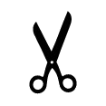
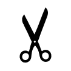

Assignment 5 SYST10199 Web Programming
Complete all of the following steps:
- Objective
-
Create rock/paper/scissors/lizard/Spock game using pure PHP and add to the Games website.
Instructions
- Notes
-
Copy the
assign4games project directory toassign5directory. DO NOT OVERWRITE your previous assignments! All assignments must remain available until one week after the end of the semester. This version should contain all functionality of the previous assignments and NO functionality from future assignments!Add the new functionality to the new copy of the directory.
Use your own images to display the results of the players' choices.
If you want to use these (117x117), right-click on each images and "Save image as...": , ,

,


- It should take a parameter that specifies the user’s move and then generates a random move of its own. It should display appropriate images for the computer’s move and the player’s move and then state who won.
- It Incorporate it in your JS version by:
- Add a button (toggle) whether the user wants to run the JS version or the PHP version.
- Run the PHP version automatically when the user disables JS. on their computer
- Comments
-
Ask questions and discuss the problem on Piazza Q&A. Do not share entire solution. You can share and discussion small fragments (snippets - a few lines) only.
- Submission
-
Prior to submission, review • • and How to document code?
In the Dropbox Comments field, provide the URL to the published web app on dev.fast.sheridanc.on.ca
Attach an electronic code printout
userid_a5_php.pdfto the SLATE Dropbox.Attach the file
userid_a5.zipcontaining the entireassign5sub-tree to the SLATE Dropbox.